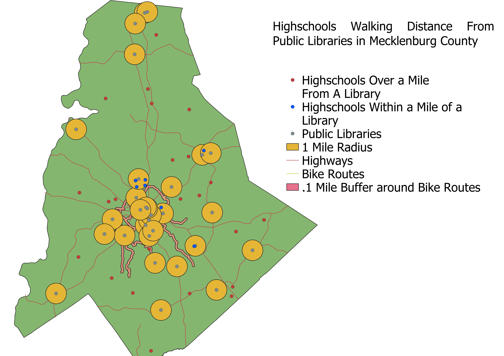

Homework 10: A map of highschools in Charlotte.
JT Faucette
This map was inspired by the first map I ever made for this class. It involves mapping out every library in Mecklenburg County as well as every High School in the County. Then, a buffer of one mile, reasonable walking distance, was made around every library. Finally, An intersection between the high schools and the buffer zones were calculated in order to see which high schools were within walking distance of a public library. Very few were. I also created a buffer zone of a tenth of a mile around the bike routes in Charlotte to see if any schools were close to the bike routes but none of them were close enough to intersect.

Data used for this project found at http://maps.co.mecklenburg.nc.us/openmapping/index.html
Link to highschool intersection geoJSON